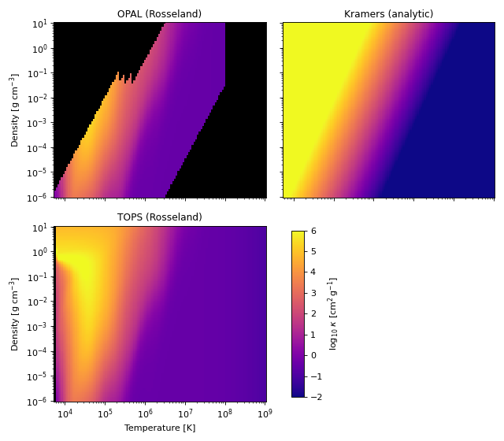

Opacity Laws#
Hint
For the underlying physics of each opacity law see Opacity Theory. For instructions on implementing custom laws see Developer Guide: Implementing Opacity Laws.
The trilobite.radiation.opacity module provides opacity laws for astrophysical
plasma modelling. Every law exposes a uniform interface returning the opacity
\(\kappa\) in \(\mathrm{cm^2\,g^{-1}}\) and its logarithmic derivatives with
respect to density and temperature. These opacity laws are then incorporated into various physics
engines throughout the code-base to close the energy-balance equation, compute optical depths, and so on.
In many cases, users are able to provide an opacity specification as a string, instantiate a particular opacity class directly, or implement a custom opacity function. All of the infrastructure for working with these functions is found in this module, and the public interface is designed to be flexible and context-agnostic. The same opacity object can be used wherever an opacity evaluation is needed: in the energy-balance solver of an accretion disc integrator, in an optical-depth integration over a supernova CSM density profile, in a stellar-wind or outflow model, or as a building block in a custom spectral-synthesis pipeline.
Overview#
All of the opacity laws in Trilobite effectively represent a function of the form
and (optionally) its derivatives with respect to each of the variables. These are all implemented as
subclasses of the base class OpacityLaw, which defines the public
interface for opacity evaluation and differentiation.
In addition to the generic base class, there are a number of opacity sub-types which are provided specifically for use in different contexts. Most importantly, opacity functions are separated based on their arguments:
General Opacity functions take the frequency (\(\nu\)) as an argument and are designed for use in more complex / detailed radiative transfer applications.
Grey Opacity functions are frequency-independent and depend only on density and temperature. These are the most commonly used opacities in Trilobite and are the only type currently implemented, but the framework is designed to accommodate more complex frequency-dependent laws in the future.
Important
Currently, there are NO frequency dependent opacity laws implemented in Trilobite.
Grey Opacity Subtypes#
There are two subclasses of grey opacities which are worth of special mention: the Rosseland mean and Planck mean opacities. These are frequency-averaged opacities that are commonly used in astrophysical applications, and they differ in the weighting function used for the frequency average.
The Rosseland mean is the harmonic mean of the monochromatic opacity, weighted by the temperature derivative of the Planck function:
The harmonic weighting means the Rosseland mean is dominated by the most transparent frequency channels — those through which radiation escapes most easily. It therefore governs radiative diffusion through an optically thick medium, entering the radiative flux as
When to use: stellar interiors, accretion disc midplanes, supernova ejecta — any regime where the mean free path is short compared to the scale of interest and the radiation field is close to isotropic (diffusion approximation). All currently implemented Trilobite opacity laws provide the Rosseland mean.
The Planck mean is the arithmetic mean of the monochromatic opacity, weighted by the Planck function itself:
Because it weights by the emission spectrum, \(\kappa_P\) is dominated by the most opaque frequency channels — those that absorb (and emit) the most thermal radiation. It governs the net rate at which matter and radiation exchange energy and therefore controls thermal equilibration and radiative cooling rates.
When to use: optically thin regions (stellar atmospheres, CSM shells, nebulae) where line cooling, photo-ionisation heating, or departure from LTE are important; also in radiation-hydrodynamics codes that split the energy-exchange and diffusion operators.
Note
TOPSOpacity provides
the Planck mean via mean_type="planck". Standalone analytic Planck-mean laws
(e.g. a Planck-weighted Kramers) are not yet implemented.
Note
Opacities are internally aware of their type, meaning that a Rosseland mean opacity object knows it is a Rosseland mean and can only be used in contexts where a Rosseland mean is required. This is enforced by the class hierarchy and the public interface of each opacity law. Models can engines can check the type of opacity they are given and raise an error if it is incompatible with the intended use.
Initializing Opacities#
There are many ways to get started with an opacity law, depending on the context and the user’s needs. The most direct way is to instantiate one of the provided classes directly, but there are also helper functions for loading table-based opacities and for resolving opacity specifications from strings or existing instances. The following sections cover the most common use cases.
Direct instantiation#
Opacity laws can be constructed directly by instantiating the desired
class. All public opacity classes are importable from
trilobite.radiation.opacity.
from trilobite.radiation.opacity import (
KramersESOpacity, OPALOpacity, TOPSOpacity,
load_opal_opacity, load_tops_opacity,
)
# Analytic opacity laws
kap = KramersESOpacity() # default (solar-like) normalization
kap = KramersESOpacity(kappa_es=0.20) # helium-dominated plasma
# Table-based opacity (OPAL Rosseland mean)
kap = load_opal_opacity(72) # solar composition (X=0.70, Z=0.02)
kap = load_opal_opacity(X=0.70, Z=0.02) # same, by composition
# Table-based opacity (TOPS — Rosseland or Planck mean)
kap = load_tops_opacity() # bundled solar table, Rosseland
kap = load_tops_opacity(mean_type="planck") # Planck mean
kap = TOPSOpacity.load_default(out_of_bounds="nan")
In some cases, this is quite simple to achieve (e.g. for Kramer’s opacities), but in other cases (particularly those involving tables), it may require some more familiarity with the underlying data and available options.
Hint
For table-based opacities where there are multiple tables available with different compositions, the relevant classes provide search and selection methods to help you find the right table for your application.
Using get_opacity#
get_opacity() is the recommended
entry point when an opacity specification is passed in from outside (e.g. a
model parameter). It accepts a registered string key, a plain float, or an
existing opacity instance and always returns a
GreyOpacityLaw:
from trilobite.radiation.opacity import get_opacity
kap = get_opacity("kramers_es") # string key → KramersESOpacity()
kap = get_opacity("opal") # solar OPAL table
kap = get_opacity(my_kap) # existing instance returned unchanged
The full table of registered string keys is in the API reference
and in get_opacity().
Constant Opacities#
A flat, state-independent opacity can be constructed from a plain float (in
\(\mathrm{cm^2\,g^{-1}}\)) or an Quantity:
import astropy.units as u
from trilobite.radiation.opacity import ConstantGreyOpacity
kap = ConstantGreyOpacity(0.34) # solar electron-scattering value
kap = ConstantGreyOpacity(0.034 * u.m**2 / u.kg) # same value via Quantity
print(kap.kappa) # <Quantity 0.34 cm2 / g>
get_opacity also accepts a plain float and wraps it in a
ConstantGreyOpacity
automatically:
kap = get_opacity(0.34) # → ConstantGreyOpacity(0.34)
Working With Opacity Objects#
Once an opacity object has been constructed, its interface is identical regardless of
whether it wraps a simple analytic formula or a large numerical table. All public
methods are unit-aware: they accept Quantity inputs and return
Quantity outputs in consistent CGS units.
Hint
Like most elements of the Trilobite API, there are also CGS-only private methods that operate in log-space and are designed for use in performance-critical code paths.
See the section below on the public/private API for details.
Evaluating the Opacity#
In all opacity objects the primary entry point is the
opacity() method, which returns the opacity,
which accepts the density (\(\rho\)) and temperature (\(T\)) as well as
(in frequency dependent laws), the frequency (\(\nu\)) as arguments. For grey opacity laws, the frequency
argument is accepted but silently ignored. The Law will then evaluate the
opacity function
and return the result as a Quantity in \(\mathrm{cm^2\,g^{-1}}\).
import astropy.units as u
from trilobite.radiation.opacity import get_opacity
kap = get_opacity("kramers_es")
rho = 1e-5 * u.g / u.cm**3
T = 1e7 * u.K
kappa = kap.opacity(rho, T) # returns a Quantity in cm² g⁻¹
print(kappa) # <Quantity ... cm2 / g>
All opacity laws support NumPy broadcasting, so arrays of densities or temperatures (or both) can be passed directly:
import numpy as np
rho_arr = np.logspace(-8, -2, 200) * u.g / u.cm**3
T_arr = np.logspace(4, 8, 200) * u.K
kappa_arr = kap.opacity(rho_arr, T_arr) # shape (200,)
Two-dimensional opacity surfaces, useful, for example, for inspecting the behaviour of an OPAL table across the \((\rho, T)\) plane, can be computed by constructing a grid beforehand:
from trilobite.radiation.opacity import OPALOpacity
opal = OPALOpacity.load_default(out_of_bounds="nan")
rho_grid, T_grid = np.meshgrid(
np.logspace(-8, 0, 70) * u.g / u.cm**3,
np.logspace(3.75, 8.7, 70) * u.K,
indexing="ij",
)
kappa_surface = opal.opacity(rho_grid, T_grid) # shape (70, 70), NaN outside table
Notice the use of out_of_bounds="nan" here: grid points that fall outside the
tabulated domain return nan rather than raising an error, which makes
it straightforward to mask or visualise the valid region of the table.
Important
For grey opacity laws, the nu argument present on the base class
opacity() is
accepted but silently ignored: grey opacities have no frequency dependence.
The public method signature for
GreyOpacityLaw
subclasses is therefore simply opacity(rho, T).
Example: Comparing Opacity Families
import numpy as np
import matplotlib.pyplot as plt
from astropy import units as u
from mpl_toolkits.axes_grid1.inset_locator import inset_axes
from trilobite.radiation.opacity import OPALOpacity, KramersOpacity, TOPSOpacity
# ---------------------------------------------------------------------
# Sampling grid
# ---------------------------------------------------------------------
rho = np.logspace(-6, 1, 120) * u.g / u.cm**3
T = np.logspace(3.75, 9, 120) * u.K
RHO, TMP = np.meshgrid(rho, T, indexing="ij")
rho_q = RHO.ravel()
T_q = TMP.ravel()
# ---------------------------------------------------------------------
# Evaluate opacity models
# ---------------------------------------------------------------------
opal = OPALOpacity.load_default(out_of_bounds="nan")
kram = KramersOpacity()
tops = TOPSOpacity.load_default(mean_type="rosseland", out_of_bounds="nan")
lg_opal = np.log10(opal.opacity(rho_q, T_q).reshape(RHO.shape).cgs.value)
lg_kram = np.log10(kram.opacity(rho_q, T_q).reshape(RHO.shape).cgs.value)
lg_tops = np.log10(tops.opacity(rho_q, T_q).reshape(RHO.shape).cgs.value)
# ---------------------------------------------------------------------
# Plot settings
# ---------------------------------------------------------------------
vmin, vmax = -2, 6
cmap = plt.get_cmap("plasma").copy()
cmap.set_bad(color="k")
fig, axes = plt.subplots(2, 2, figsize=(8, 7), sharex=True, sharey=True)
panels = [
(lg_opal, "OPAL (Rosseland)"),
(lg_kram, "Kramers (analytic)"),
(lg_tops, "TOPS (Rosseland)"),
]
# ---------------------------------------------------------------------
# Plot panels
# ---------------------------------------------------------------------
for ax, (surf, title) in zip(axes.flat, panels):
im = ax.pcolormesh(
T.value,
rho.value,
surf,
cmap=cmap,
vmin=vmin,
vmax=vmax,
shading="auto",
)
ax.set_xscale("log")
ax.set_yscale("log")
ax.set_title(title, fontsize=11)
# Hide unused panel
axes[1, 1].axis("off")
# Axis labels (only outer)
for ax in axes[1]:
ax.set_xlabel("Temperature [K]")
for ax in axes[:, 0]:
ax.set_ylabel(r"Density [g cm$^{-3}$]")
# ---------------------------------------------------------------------
# Inset colorbar
# ---------------------------------------------------------------------
cb_parent = axes[1, 1]
cb_ax = inset_axes(
cb_parent,
width="6%",
height="95%",
loc="center left",
borderpad=1,
)
cbar = fig.colorbar(
im,
cax=cb_ax,
)
cbar.set_label(r"$\log_{10}\,\kappa\ \mathrm{[cm^2\,g^{-1}]}$")
# ---------------------------------------------------------------------
# Layout polish
# ---------------------------------------------------------------------
plt.tight_layout()
plt.show()
(Source code, png, hires.png, pdf)
{kind=link}
{kind=link}

Opacity Derivatives#
All opacity laws expose logarithmic partial derivatives, which are the natural quantities for stability analysis, disc structure equations, and stellar envelope integrations. Specifically, Trilobite provides the two dimensionless logarithmic derivatives
For a pure power-law opacity \(\kappa \propto \rho^\alpha T^\beta\), these are simply the exponents. For example, the Kramers free-free law \(\kappa \propto \rho T^{-3.5}\) gives \(\alpha = 1\) and \(\beta = -3.5\), while electron scattering and other constant grey opacities give \(\alpha = \beta = 0\). Table-based opacities return local finite-difference estimates of these quantities computed in log-space from the bilinearly-interpolated grid.
The derivatives are computed via
dlogkappa_dlogrho()
and
dlogkappa_dlogT(),
which accept the same unit-bearing arguments as
opacity():
from trilobite.radiation.opacity import get_opacity
import astropy.units as u
kap = get_opacity("kramers_ff")
rho = 1e-5 * u.g / u.cm**3
T = 1e7 * u.K
alpha = kap.dlogkappa_dlogrho(rho, T) # → 1.0 (kappa ~ rho^1)
beta = kap.dlogkappa_dlogT(rho, T) # → -3.5 (kappa ~ T^-3.5)
The same calls work for OPAL table opacities, but here the derivatives are estimated numerically from the bilinear interpolant:
from trilobite.radiation.opacity import OPALOpacity
opal = OPALOpacity.load_default()
alpha = opal.dlogkappa_dlogrho(rho, T)
beta = opal.dlogkappa_dlogT(rho, T)
These values are particularly useful when constructing opacity-dependent stability criteria such as the Ledoux condition or the viscous instability criterion for accretion discs, both of which depend critically on the local exponents \(\alpha\) and \(\beta\).
Important
The derivatives returned by analytic Kramers-type laws are exact power-law exponents derived analytically from the closed-form expression for \(\kappa\). The derivatives returned by OPAL table opacities are numerical estimates from the bilinear interpolant and may exhibit discontinuities at grid cell boundaries. If smooth derivatives are required near a specific \((\rho, T)\) point, consider using a Kramers approximation calibrated to that region instead.
The Public / Private API#
Every opacity class in Trilobite exposes two distinct layers of interface, which serve different audiences.
The public interface is unit-aware and designed for interactive use and
high-level model code. Methods at this level accept Quantity
inputs, perform unit conversion internally, and return Quantity
outputs. These are the methods documented above — opacity(),
dlogkappa_dlogrho(), and dlogkappa_dlogT().
The private log-space interface is intended for use inside performance-critical code paths — for example, the inner loop of a time-stepping integrator or a Cython extension module — where the overhead of unit handling and exponentiation would be significant. The private methods operate entirely in natural-log space:
_log_opacity(log_T, log_rho)()— returns \(\ln\kappa\) in \(\mathrm{cm^2\,g^{-1}}\)_dlogkappa_dlogrho(log_T, log_rho)()— returns \(\partial\ln\kappa/\partial\ln\rho\)_dlogkappa_dlogT(log_T, log_rho)()— returns \(\partial\ln\kappa/\partial\ln T\)
Arguments are plain Python floats or NumPy arrays with no attached units; the caller is responsible for the coordinate system (natural log, CGS). These methods are not part of the stable public API and may change without notice.
import numpy as np
from trilobite.radiation.opacity import get_opacity
kap = get_opacity("kramers_es")
log_T = np.log(1e7) # ln(T [K])
log_rho = np.log(1e-5) # ln(rho [g/cm³])
ln_kappa = kap._log_opacity(log_T, log_rho)
kappa = np.exp(ln_kappa) # in cm² g⁻¹
(Developers) Calling the C-level Opacity#
For Cython extension modules that need the fastest possible opacity evaluation,
the compiled backend object can be accessed directly. Opacity laws with
IS_C_BACKED = True store a reference to their Cython companion on
_c_object. This companion exposes two signatures for each quantity:
a scalar entry point and a contiguous-array entry point:
from trilobite.radiation.opacity import OPALOpacity
import numpy as np
opal = OPALOpacity.load_default()
assert opal.IS_C_BACKED
# Scalar evaluation (releases the GIL internally)
ln_kap = opal._c_object.log_opacity(np.log(1e7), np.log(1e-5))
d_rho = opal._c_object.dlogkappa_dlogrho(np.log(1e7), np.log(1e-5))
d_T = opal._c_object.dlogkappa_dlogT(np.log(1e7), np.log(1e-5))
# Array evaluation (requires C-contiguous float64 arrays)
log_T = np.ascontiguousarray(np.log([1e6, 1e7, 1e8]), dtype=np.float64)
log_rho = np.ascontiguousarray(np.log([1e-7, 1e-5, 1e-3]), dtype=np.float64)
ln_kap_arr = opal._c_object.log_opacity_array(log_T, log_rho)
Inside a .pyx file, the _c_object attribute can be typed as the
appropriate C_GreyOpacityBase subclass to avoid Python-level dispatch
and enable direct cdef-level calls:
from trilobite.radiation.opacity.grey_opacity.rosseland._opal_table cimport C_OPALTableOpacity
from trilobite.radiation.opacity.grey_opacity.rosseland import OPALOpacity
cdef C_OPALTableOpacity c_kap = OPALOpacity.load_default()._c_object
cdef double eval_kap(double log_T, double log_rho) nogil:
return c_kap.log_opacity(log_T, log_rho)
Note
C-backed evaluation does not perform unit conversion. Arguments must be in natural log of CGS units (\(\ln T\) in K, \(\ln\rho\) in \(\mathrm{g\,cm^{-3}}\)), and the return value is \(\ln\kappa\) in \(\mathrm{cm^2\,g^{-1}}\).
Custom Opacity Tables#
In some cases, users may need to work with custom opacity tables, particularly if they are performing detailed radiative transfer calculations. Because Trilobite does not fashion itself to be a spectral synthesis code (and to avoid the bloat of managing large opacity datasets), the set of built-in opacity tables is very minimal:
OPAL Opacities: Trilobite bundles the OPAL opacity tables of footcite:t:2005ASPC..336…25A, providing opacities over a fairly significant set of compositions. These are accessible via the
OPALOpacityclass and the helper functionload_opal_opacity(); however, it should also be noted that these tables to not cover every \((\rho, T)\) regime of interest in many cases.TOPS Opacities: Trilobite provides only a single TOPS opacity table with standard solar composition, which is accessible via the
TOPSOpacityclass.
In order to work with other custom opacity tables, users may be able to simply download the table and load
it into the code (for TOPS opacities), or they may need to implement a custom subclass of
GreyOpacityLaw that performs interpolation over
the table (for OPAL opacities, which are not provided in a convenient format for direct loading). The latter
is more work but also more flexible, and the Developer Guide: Implementing Opacity Laws provides a step-by-step walkthrough of
how to do this.
Custom TOPS Tables#
The Los Alamos National Laboratory (LANL) provides a service called TOPS which allows users to download custom opacity tables for various compositions [1]. These tables and the corresponding web interface are free to use, but they are not designed for programmatic access.
Users may visit https://aphysics2.lanl.gov/ to download custom TOPS tables
for their desired composition. Once downloaded, these tables can be loaded into Trilobite using the
read_tops() function, which returns a namespace containing all of the
relevant data extracted from the table text file. This can then be passed to
TOPSOpacity to construct an opacity object that can be
used in the same way as any other opacity law.
API Reference#
|
Resolve an opacity specification into an |
|
Base class for opacity laws \(\kappa(\nu, \rho, T)\). |
|
Abstract base class for grey (frequency-averaged) opacity laws. |
|
Grey opacity law with a fixed, composition- and state-independent value. |
|
Thomson electron-scattering opacity. |
|
Free-free (bremsstrahlung) Kramers opacity. |
|
Bound-free (photoionisation) Kramers opacity. |
|
Combined free-free and bound-free Kramers opacity. |
|
Free-free Kramers opacity with an electron-scattering floor. |
|
Bound-free Kramers opacity with an electron-scattering floor. |
|
Combined Kramers opacity with an electron-scattering floor. |
|
Rosseland mean opacity from bilinear interpolation on a 2-D OPAL table. |
|
Load an OPAL Rosseland mean opacity for a specified composition. |